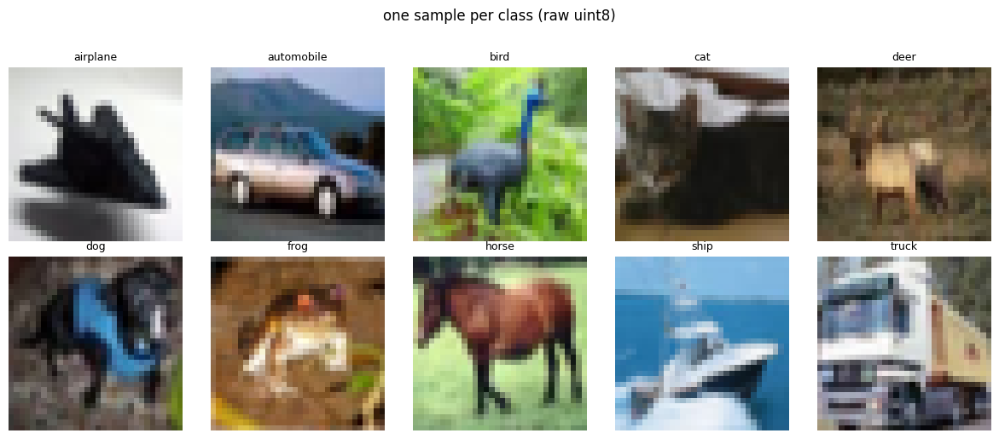
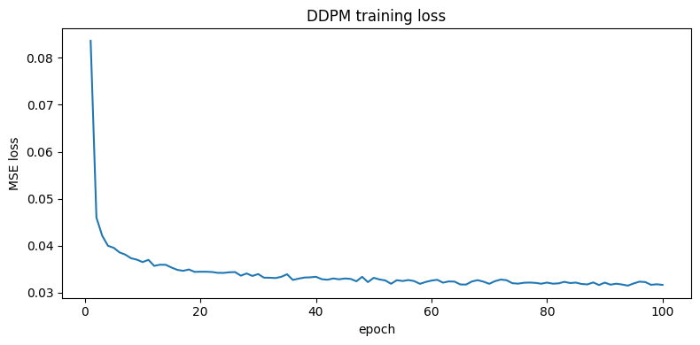
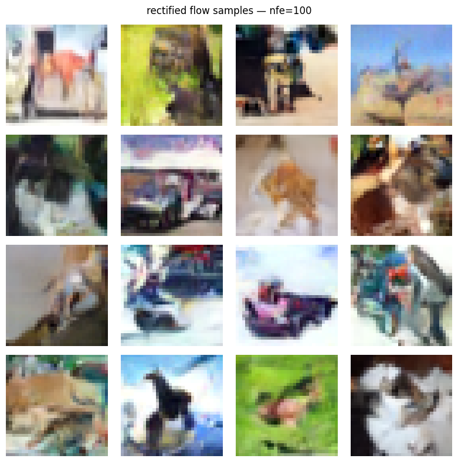
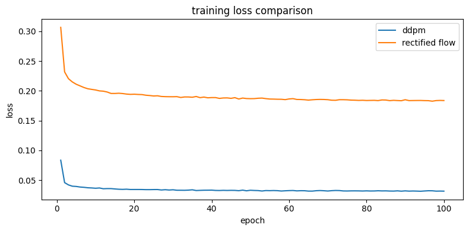

# cell 3 - 5x5 grid, one image per class (pick 5 random images per class → show first two rows as class representatives)fig, axes = plt.subplots(2, 5, figsize=(12, 5))for cls_idx in range(10): idx = np.where(targets == cls_idx)[0][0] ax = axes[cls_idx // 5][cls_idx % 5] ax.imshow(imgs[idx]) ax.set_title(classes[cls_idx], fontsize=9) ax.axis("off")plt.suptitle("one sample per class (raw uint8)", y=1.02)plt.tight_layout()plt.show()

# cell 4 - per-channel mean and std on raw [0, 255] dataimgs_f = imgs.astype(np.float32) # (50000, 32, 32, 3)ch_mean = imgs_f.mean(axis=(0, 1, 2))ch_std = imgs_f.std(axis=(0, 1, 2))for i, ch in enumerate(["R", "G", "B"]): print(f"{ch} mean={ch_mean[i]:.3f} std={ch_std[i]:.3f}")
R mean=125.307 std=62.993
G mean=122.950 std=62.089
B mean=113.866 std=66.705
output shape: torch.Size([2, 3, 32, 32]) (expected (2, 3, 32, 32))
total params: 5,053,763 (must be ≤ 30M)
# cell 18 - verify output shape matches input and gradients flowloss = out.mean()loss.backward()grad_norms = {n: p.grad.norm().item() for n, p in model.named_parameters() if p.grad is not None}print(f"layers with gradients: {len(grad_norms)}")print(f"min grad norm: {min(grad_norms.values()):.2e}")print(f"max grad norm: {max(grad_norms.values()):.2e}")print(f"any zero grads: {any(v == 0.0 for v in grad_norms.values())}")
layers with gradients: 96
min grad norm: 1.84e-02
max grad norm: 6.07e+00
any zero grads: False
Files already downloaded and verified
device: cuda
batches/ep: 390
params: 5,053,763
# cell 20 — run training, log loss every epochloss_history = []for epoch in range(1, N_EPOCHS + 1): model.train() epoch_loss = 0.0 t0 = time.time() for imgs, _ in tqdm(train_loader, desc=f"epoch {epoch:3d}/{N_EPOCHS}", leave=False): imgs = imgs.to(DEVICE) optimizer.zero_grad() loss = diffusion_loss(model, imgs, ab_dev) loss.backward() nn.utils.clip_grad_norm_(model.parameters(), 1.0) optimizer.step() epoch_loss += loss.item() avg = epoch_loss / len(train_loader) loss_history.append(avg) print(f"epoch {epoch:3d}/{N_EPOCHS} loss={avg:.4f} time={time.time()-t0:.1f}s")torch.save(model.state_dict(), "ddpm_unet.pt")print("\nmodel saved → ddpm_unet.pt")
epoch 1/100 loss=0.0836 time=22.9s
epoch 2/100 loss=0.0460 time=22.3s
epoch 3/100 loss=0.0421 time=22.3s
epoch 4/100 loss=0.0400 time=22.3s
epoch 5/100 loss=0.0395 time=22.3s
epoch 6/100 loss=0.0385 time=22.3s
epoch 7/100 loss=0.0381 time=22.3s
epoch 8/100 loss=0.0373 time=22.3s
epoch 9/100 loss=0.0370 time=22.3s
epoch 10/100 loss=0.0365 time=22.3s
epoch 11/100 loss=0.0370 time=22.4s
epoch 12/100 loss=0.0357 time=22.4s
epoch 13/100 loss=0.0359 time=22.4s
epoch 14/100 loss=0.0359 time=22.3s
epoch 15/100 loss=0.0353 time=22.4s
epoch 16/100 loss=0.0348 time=22.4s
epoch 17/100 loss=0.0346 time=22.3s
epoch 18/100 loss=0.0349 time=22.3s
epoch 19/100 loss=0.0344 time=22.3s
epoch 20/100 loss=0.0344 time=22.4s
epoch 21/100 loss=0.0344 time=22.3s
epoch 22/100 loss=0.0344 time=22.3s
epoch 23/100 loss=0.0342 time=22.3s
epoch 24/100 loss=0.0342 time=22.3s
epoch 25/100 loss=0.0343 time=22.3s
epoch 26/100 loss=0.0344 time=22.3s
epoch 27/100 loss=0.0336 time=22.4s
epoch 28/100 loss=0.0341 time=22.3s
epoch 29/100 loss=0.0335 time=22.3s
epoch 30/100 loss=0.0339 time=22.3s
epoch 31/100 loss=0.0332 time=22.3s
epoch 32/100 loss=0.0331 time=22.3s
epoch 33/100 loss=0.0331 time=22.4s
epoch 34/100 loss=0.0333 time=22.3s
epoch 35/100 loss=0.0339 time=22.3s
epoch 36/100 loss=0.0327 time=22.3s
epoch 37/100 loss=0.0330 time=22.3s
epoch 38/100 loss=0.0332 time=22.3s
epoch 39/100 loss=0.0332 time=22.3s
epoch 40/100 loss=0.0334 time=22.3s
epoch 41/100 loss=0.0328 time=22.3s
epoch 42/100 loss=0.0327 time=22.3s
epoch 43/100 loss=0.0330 time=22.3s
epoch 44/100 loss=0.0328 time=22.3s
epoch 45/100 loss=0.0330 time=22.4s
epoch 46/100 loss=0.0329 time=22.3s
epoch 47/100 loss=0.0324 time=22.3s
epoch 48/100 loss=0.0333 time=22.3s
epoch 49/100 loss=0.0322 time=22.3s
epoch 50/100 loss=0.0331 time=22.3s
epoch 51/100 loss=0.0328 time=22.3s
epoch 52/100 loss=0.0326 time=22.3s
epoch 53/100 loss=0.0319 time=22.3s
epoch 54/100 loss=0.0326 time=22.4s
epoch 55/100 loss=0.0325 time=22.4s
epoch 56/100 loss=0.0327 time=22.3s
epoch 57/100 loss=0.0324 time=22.3s
epoch 58/100 loss=0.0319 time=22.3s
epoch 59/100 loss=0.0322 time=22.4s
epoch 60/100 loss=0.0325 time=22.4s
epoch 61/100 loss=0.0327 time=22.3s
epoch 62/100 loss=0.0321 time=22.4s
epoch 63/100 loss=0.0324 time=22.4s
epoch 64/100 loss=0.0323 time=22.3s
epoch 65/100 loss=0.0317 time=22.3s
epoch 66/100 loss=0.0317 time=22.4s
epoch 67/100 loss=0.0324 time=22.4s
epoch 68/100 loss=0.0326 time=22.4s
epoch 69/100 loss=0.0323 time=22.3s
epoch 70/100 loss=0.0319 time=22.4s
epoch 71/100 loss=0.0324 time=22.3s
epoch 72/100 loss=0.0328 time=22.4s
epoch 73/100 loss=0.0326 time=22.3s
epoch 74/100 loss=0.0320 time=22.3s
epoch 75/100 loss=0.0319 time=22.3s
epoch 76/100 loss=0.0321 time=22.3s
epoch 77/100 loss=0.0321 time=22.4s
epoch 78/100 loss=0.0321 time=22.3s
epoch 79/100 loss=0.0319 time=22.4s
epoch 80/100 loss=0.0321 time=22.4s
epoch 81/100 loss=0.0319 time=22.4s
epoch 82/100 loss=0.0319 time=22.3s
epoch 83/100 loss=0.0323 time=22.3s
epoch 84/100 loss=0.0320 time=22.3s
epoch 85/100 loss=0.0321 time=22.3s
epoch 86/100 loss=0.0318 time=22.3s
epoch 87/100 loss=0.0317 time=22.3s
epoch 88/100 loss=0.0321 time=22.3s
epoch 89/100 loss=0.0316 time=22.3s
epoch 90/100 loss=0.0321 time=22.4s
epoch 91/100 loss=0.0317 time=22.3s
epoch 92/100 loss=0.0319 time=22.3s
epoch 93/100 loss=0.0317 time=22.3s
epoch 94/100 loss=0.0315 time=22.3s
epoch 95/100 loss=0.0319 time=22.3s
epoch 96/100 loss=0.0323 time=22.3s
epoch 97/100 loss=0.0322 time=22.3s
epoch 98/100 loss=0.0316 time=22.3s
epoch 99/100 loss=0.0318 time=22.3s
epoch 100/100 loss=0.0316 time=22.3s
model saved → ddpm_unet.pt
# cell 21 - plot training loss curvefig, ax = plt.subplots(figsize=(8, 4))ax.plot(range(1, N_EPOCHS + 1), loss_history)ax.set_xlabel("epoch")ax.set_ylabel("MSE loss")ax.set_title("DDPM training loss")plt.tight_layout()plt.show()print(f"initial loss: {loss_history[0]:.4f} (expected ≈ 1.0 — predicting random noise)")print(f"final loss: {loss_history[-1]:.4f} (expected < 0.1 after convergence)")

initial loss: 0.0836 (expected ≈ 1.0 — predicting random noise)
final loss: 0.0316 (expected < 0.1 after convergence)
The JKO Scheme
The Jordan-Kinderlehrer-Otto (JKO) scheme is a time-discretization of gradient flow in the space of probability distributions equipped with the Wasserstein-2 metric.
At each discrete step \(k\), the next distribution \(\rho_{k+1}\) is defined by:
\(\mathcal{F}[\rho] = \mathrm{KL}(\rho \| p_{\text{data}})\): the functional being minimized — measures how far the current distribution is from the data distribution.
\(W_2^2(\rho, \rho_k)\): the squared Wasserstein-2 distance — penalizes moving too far in a single step. Acts as a speed limit in distribution space.
\(\tau\): the step size — corresponds to \(\beta_t\) in the DDPM noise schedule.
Connection to DDPM
Each DDPM denoising step is precisely a JKO update:
JKO term
DDPM equivalent
\(\rho_k\)
noisy distribution \(q(x_t)\) at step \(t\)
\(\rho_{k+1}\)
denoised distribution \(p_\theta(x_{t-1})\)
step size \(\tau\)
noise schedule parameter \(\beta_t\)
velocity field
score network \(\varepsilon_\theta(x_t, t)\)
The reverse SDE in DDPM implements the continuous limit of this scheme: as \(\tau \to 0\) and \(T \to \infty\), the discrete JKO steps converge to the Fokker-Planck equation, whose drift term is exactly the score function \(\nabla_x \log p(x_t)\).
Why This Reframes Training
Naively, training \(\varepsilon_\theta\) looks like pixel-space curve-fitting — minimizing MSE between predicted and true noise vectors.
The JKO lens reveals what is actually happening:
Training is gradient descent in the space of probability distributions. The score network learns the velocity field of a Wasserstein gradient flow that transports \(\mathcal{N}(0, I)\) toward \(p_{\text{data}}\) along the direction of steepest descent of \(\mathrm{KL}(\cdot \| p_{\text{data}})\).
This is not curve-fitting. It is learning the geometry of the Wasserstein manifold — specifically, the vector field that moves probability mass most efficiently from noise to data.
Implication for Sampling Quality
Because each denoising step is a proximal minimization, the step size \(\beta_t\) directly controls the trade-off between: - fidelity to data (minimize \(\mathrm{KL}\)), and - stability (stay close to \(\rho_k\) via \(W_2\) penalty).
Too large a \(\beta_t\): distribution jumps erratically — proximal term too weak. Too small a \(\beta_t\): convergence is slow — requires many NFEs.
This is the mathematical reason why DDPM needs large \(T\) steps, and why Rectified Flow can do better — it finds straighter paths in distribution space, reducing the number of proximal steps needed.
# cell 22 - implement ddpm reverse sampler@torch.no_grad()def ddpm_sample(model: nn.Module, alpha_bars: torch.Tensor, betas: torch.Tensor, n_samples: int=16, device: torch.device=DEVICE) -> torch.Tensor: """ Full T-step DDPM reverse sampler. Starts from x_T ~ N(0,I) and applies learned reverse transition p_θ(x_{t-1}|x_t) for T steps. Returns denoised images in [-1,1]. """ alphas = 1.0 - betas ab = alpha_bars.to(device) al = alphas.to(device) be = betas.to(device) x = torch.randn(n_samples, 3, 32, 32, device=device) # x_T ~ N(0,I) for t in reversed(range(len(be))): t_batch = torch.full((n_samples,), t, device=device, dtype=torch.long) eps_pred = model(x, t_batch) # compute reverse mean μ_θ coeff = be[t] / (1 - ab[t]).sqrt() mean = (1 / al[t].sqrt()) * (x - coeff * eps_pred) if t > 0: sigma = be[t].sqrt() x = mean + sigma * torch.randn_like(x) else: x = mean # no noise at t=0 return x# smoke test: single forward pass through sampler, check output shape and rangemodel.eval()samples = ddpm_sample(model, alpha_bars, betas, n_samples=4)print(f"output shape: {samples.shape} (expected (4, 3, 32, 32))")print(f"min={samples.min():.3f} max={samples.max():.3f} (expected roughly in [-1,1])")
# cell 30 - visualize rectified flow samples and compare loss curvesrf_samples_grid, _ = rf_sample(rf_model, n_samples=16, n_steps=100)show_grid(rf_samples_grid, "rectified flow samples — nfe=100")fig, ax = plt.subplots(figsize=(8, 4))ax.plot(range(1, N_EPOCHS + 1), loss_history, label="ddpm")ax.plot(range(1, N_EPOCHS + 1), rf_history, label="rectified flow")ax.set_xlabel("epoch")ax.set_ylabel("loss")ax.set_title("training loss comparison")ax.legend()plt.tight_layout()plt.show()print(f"ddpm final loss: {loss_history[-1]:.4f}")print(f"rf final loss: {rf_history[-1]:.4f}")print(f"note: losses are not directly comparable — different target scales")


ddpm final loss: 0.0316
rf final loss: 0.1838
note: losses are not directly comparable — different target scales
Stage 8 — The Push-Forward View: Unifying DDPM and Rectified Flow## The Push-Forward OperatorFor a measurable map \(T: \mathbb{R}^d \to \mathbb{R}^d\) and source distribution \(\mu\), the push-forward\(T_\sharp \mu = \nu\) means:\[\nu(A) = \mu(T^{-1}(A)) \quad \forall \text{ measurable } A\]In plain terms: if you draw samples \(x \sim \mu\) and apply \(T\), the outputs \(T(x)\) are distributed as \(\nu\). Both DDPM and Rectified Flow learn different parameterizations of this map.—## Rectified Flow: Deterministic Push-ForwardThe ODE flow map \(\varphi_t: \mathbb{R}^d \to \mathbb{R}^d\) integrates the learned velocity field from \(t=1\) to \(t=0\):\[\varphi_0(x) = x + \int_1^0 v_\theta(x_t, t)\, dt\]The push-forward equation is:\[(\varphi_0)_\sharp \mathcal{N}(0, \mathbf{I}) = p_{\text{data}}\]The transport map is \(T = \varphi_0\) — a single deterministic function.\(v_\theta\) parameterizes \(T\) as its infinitesimal generator: the network predicts local velocity arrows whose path integral accumulates into the full transport.Because Rectified Flow trains \(v_\theta\) toward straight-line targets \((x_1 - x_0)\), the integral is nearly linear - Euler integration with few steps closely approximates the exact \(\varphi_0\).—## DDPM: Stochastic Push-Forward via Markov KernelDDPM defines a stochastic transport through a composition of Markov kernels:\[T_\sharp \mu = (K_1 \circ K_2 \circ \cdots \circ K_T)_\sharp \mathcal{N}(0, \mathbf{I})\]where each kernel \(K_t\) samples from \(p_\theta(x_{t-1} \mid x_t)\).The push-forward is not a single deterministic map but a sequence of conditional Gaussians, each shifting probability mass by one denoising step.| | Rectified Flow | DDPM ||—|—|—|| Push-forward type | deterministic | stochastic || Transport map \(T\) | \(\varphi_0\) (ODE flow) | \(K_1 \circ \cdots \circ K_T\) (Markov chain) || Generator | \(v_\theta\) (velocity field) | \(\varepsilon_\theta\) (score / noise predictor) || Path geometry | straight (≈ OT geodesic) | curved (variance-preserving SDE) || NFE to approximate \(T\) | low (path is straight) | high (path is curved) |—## UnificationBoth models solve the same problem:\[\text{find } T \text{ such that } T_\sharp \mu = \nu, \quad \mu = \mathcal{N}(0,\mathbf{I}),\quad \nu = p_{\text{data}}\]They differ only in how \(T\) is parameterized and how straight its trajectories are. Rectified Flow’s straight paths make \(T\) easier to approximate numerically — this is the geometric reason it achieves lower FID at fewer NFEs.
# cell 31 - compute inception statistics helperdef compute_inception_stats(images: torch.Tensor, batch_size: int=128, device: torch.device=DEVICE) -> tuple[np.ndarray, np.ndarray]: """ Compute mean and covariance of Inception-v3 pool3 features. images: (N, 3, H, W) in [-1,1]. Returns (mu, sigma) for FID computation. """ block_idx = InceptionV3.BLOCK_INDEX_BY_DIM[2048] inception = InceptionV3([block_idx]).to(device).eval() # inception expects [0,1] and at least 75x75 - upsample cifar-10 32→75 imgs_01 = (images.clamp(-1, 1) + 1) / 2 imgs_up = F.interpolate(imgs_01, size=(75, 75), mode="bilinear", align_corners=False) feats = [] loader = DataLoader(TensorDataset(imgs_up), batch_size=batch_size) with torch.no_grad(): for (x,) in loader: f = inception(x.to(device))[0].squeeze(-1).squeeze(-1) # (B, 2048) feats.append(f.cpu()) feats = torch.cat(feats, dim=0).numpy() mu = feats.mean(axis=0) sigma = np.cov(feats, rowvar=False) return mu, sigmaprint("inception stats function defined!")
inception stats function defined!
# cell 32 - precompute real data inception statistics (done once)print("computing real data inception stats on 10,000 cifar-10 samples...")real_loader = DataLoader(train_set, batch_size=256, shuffle=True)real_imgs = []for imgs, _ in real_loader: real_imgs.append(imgs) if len(torch.cat(real_imgs)) >= 10000: breakreal_imgs = torch.cat(real_imgs)[:10000] # (10000, 3, 32, 32) in [-1,1]mu_real, sigma_real = compute_inception_stats(real_imgs)print(f"real stats computed — mu shape: {mu_real.shape} sigma shape: {sigma_real.shape}")
computing real data inception stats on 10,000 cifar-10 samples...
Downloading: "https://github.com/mseitzer/pytorch-fid/releases/download/fid_weights/pt_inception-2015-12-05-6726825d.pth" to /root/.cache/torch/hub/checkpoints/pt_inception-2015-12-05-6726825d.pth
100%|██████████| 91.2M/91.2M [00:00<00:00, 208MB/s]
real stats computed — mu shape: (2048,) sigma shape: (2048, 2048)
# cell 33 - fid computation functiondef compute_fid(mu1, sigma1, mu2, sigma2) -> float: """ Frechet Inception Distance between two Gaussian distributions. FID = ||mu1-mu2||² + Tr(sigma1 + sigma2 − 2*sqrt(sigma1@sigma2)) """ diff = mu1 - mu2 covmean, _ = linalg.sqrtm(sigma1 @ sigma2, disp=False) if np.iscomplexobj(covmean): covmean = covmean.real fid = diff @ diff + np.trace(sigma1 + sigma2 - 2 * covmean) return float(fid)# sanity check: fid of real vs real should be ≈ 0mu_real2, sigma_real2 = compute_inception_stats(real_imgs[:5000])mu_real3, sigma_real3 = compute_inception_stats(real_imgs[5000:])fid_sanity = compute_fid(mu_real2, sigma_real2, mu_real3, sigma_real3)print(f"fid (real vs real split): {fid_sanity:.4f} (expected < 12.0)")
/tmp/ipykernel_182/2021247524.py:8: DeprecationWarning: The `disp` argument is deprecated and will be removed in SciPy 1.18.0.
covmean, _ = linalg.sqrtm(sigma1 @ sigma2, disp=False)
fid (real vs real split): 10.2679 (expected < 12.0)
# cell 35 - plot fid vs nfe curvesfig, ax = plt.subplots(figsize=(8, 5))ax.plot(NFE_BUDGETS, [ddpm_fids[n] for n in NFE_BUDGETS], "o-", label="ddpm")ax.plot(NFE_BUDGETS, [rf_fids[n] for n in NFE_BUDGETS], "s-", label="rectified flow")ax.set_xlabel("nfe (number of function evaluations)")ax.set_ylabel("fid ↓")ax.set_title("fid vs nfe: ddpm vs rectified flow")ax.set_xscale("log")ax.legend()plt.tight_layout()plt.show()